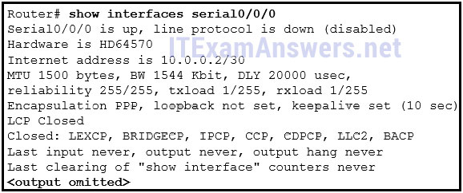

1.¿Qué enunciado describe mejor una WAN?
- WAN es otro nombre para Internet.
- Una WAN interconecta LANs en largas distancias. *
- Una WAN es una utilidad pública que permite el acceso a Internet.
- Una WAN es una LAN que se extiende para proporcionar acceso seguro a la red remota.
- @javi__super
2.Conectar oficinas en diferentes ubicaciones utilizando Internet puede ser económico para una empresa. ¿Cuáles son dos problemas importantes de política comercial que deben abordarse al usar Internet para este propósito? (Escoge dos.)
- intimidad *
- seguridad *
- Tecnología WAN
- ancho de banda
- @javi__super
3.¿Qué es una desventaja de una red de conmutación de paquetes en comparación con una red de conmutación de circuitos?
- mayor latencia *
- menos flexibilidad
- capacidad fija
- mayor costo
- @javi__super
4.Una empresa está considerando actualizar la conexión WAN del campus. ¿Qué dos opciones de WAN son ejemplos de la arquitectura WAN privada? (Escoge dos.)
- línea arrendada *
- cable
- WAN Ethernet *
- línea de abonado digital
- @javi__super
5.¿Qué enunciado describe una característica de la multiplexación por división de longitud de onda densa (DWDM)?
- Se puede usar en comunicaciones de largo alcance, como conexiones entre ISP. *
- Permite las comunicaciones bidireccionales a través de un par de cables de cobre.
- Admite el estándar SONET, pero no el estándar SDH.
- Asigna señales eléctricas entrantes a frecuencias específicas.
- @javi__super
6.¿Qué tecnología WAN puede servir como la red subyacente para transportar múltiples tipos de tráfico de red, como IP, ATM, Ethernet y DSL?
- MPLS *
- RDSI
- Retardo de fotograma
- WAN Ethernet
- @javi__super
7.¿Qué dos tecnologías WAN es más probable que sean utilizadas por una empresa que por los teletrabajadores o los usuarios domésticos? (Escoge dos.)
- Retardo de fotograma *
- cable
- MetroE *
- VPN
- @javi__super
8.La política de seguridad en una empresa especifica que el personal del departamento de ventas debe usar una VPN para conectarse a la red corporativa para acceder a los datos de ventas cuando viajan para reunirse con los clientes. ¿Qué componente necesita el personal de ventas para establecer una conexión VPN remota?
- Software cliente VPN *
- Concentrador VPN
- Dispositivo VPN
- Puerta de enlace VPN
- @javi__super
9.¿Cuántos canales DS0 se incluyen para producir una línea T1 de 1.544 Mbps?
- 24 *
- 2
- 12
- 28
- @javi__super
10.¿Qué función proporciona Multilink PPP?
- Difundir el tráfico a través de múltiples enlaces WAN físicos *
- dividiendo el ancho de banda de un solo enlace en intervalos de tiempo separados
- permitir que el tráfico de varias VLAN se desplace a través de un solo enlace de Capa 2
- creando un enlace lógico entre dos conmutadores LAN mediante el uso de múltiples enlaces físicos
- @javi__super
11.Consulte la presentación. Un administrador de red está configurando el enlace PPP entre los enrutadores R1 y R2. Sin embargo, el enlace no se puede establecer. Según la salida parcial del comando show running-config, ¿cuál es la causa del problema?
- Los nombres de usuario no coinciden con los nombres de host. *
- Los nombres de usuario no coinciden entre sí.
- Las contraseñas para CHAP deben estar en minúsculas.
- El nombre de usuario r1 se debe configurar en el enrutador R1 y el nombre de usuario r2 se debe configurar en el enrutador R2.
- @javi__super
12.Consulte la presentación. Un administrador de red ha configurado los enrutadores RTA y RTB, pero no puede hacer ping desde la interfaz en serie a la interfaz en serie. ¿Qué capa del modelo OSI es la causa más probable del problema?
- enlace de datos *
- físico
- red
- transporte
- @javi__super
13.¿Qué ventaja tiene DSL en comparación con la tecnología de cable?
- DSL no es un medio compartido. *
- Las velocidades de carga y descarga DSL son siempre las mismas.
- DSL es más rápido.
- DSL no tiene limitaciones de distancia.
- @javi__super
14.¿Qué tecnología de banda ancha sería mejor para un usuario que necesita acceso remoto cuando viaja en montañas y en el mar?
- satélite *
- WiMax
- banda ancha móvil
- Malla wifi
- @javi__super
15.¿Qué tecnología requiere el uso de PPPoE para proporcionar conexiones PPP a los clientes?
- DSL *
- módem analógico de acceso telefónico
- módem RDSI de acceso telefónico
- T1
- @javi__super
16.Consulte la presentación. ¿Qué verifica el administrador de la red cuando emite el comando show ip interface brief en R1 con respecto a la conexión PPPoE a R2?
- que el enrutador ISP ha asignado una dirección IP a la interfaz Dialer1 *
- que a la interfaz Dialer1 se le ha asignado manualmente una dirección IP
- que la interfaz Dialer1 está arriba y arriba
- que la dirección IP en R1 G0 / 1 está en el mismo rango de red que el módem DSL
- @javi__super
17.¿Qué tecnología crea una asignación de direcciones IP públicas para radios de túnel remotos en una configuración de DMVPN?
- NHRP *
- ARP
- NAT
- IPsec
- @javi__super
18.¿Cuál es el propósito del protocolo de encapsulación de encapsulación de enrutamiento genérico?
- para gestionar el transporte de multidifusión IP y el tráfico multiprotocolo entre sitios remotos *
- para proporcionar el cifrado a nivel de paquetes del tráfico IP entre sitios remotos
- para admitir túneles IP sin cifrar básicos que usan enrutadores de múltiples proveedores entre sitios remotos
- para proporcionar mecanismos fijos de control de flujo con túneles IP entre sitios remotos
- @javi__super
19.Consulte la presentación. ¿Qué se utiliza para intercambiar información de enrutamiento entre enrutadores dentro de cada AS?
- Protocolos de enrutamiento IGP *
- enrutamiento estatico
- Protocolos de enrutamiento EGP
- enrutamiento por defecto
- @javi__super
20.¿Qué rango de direcciones IPv4 cubre todas las direcciones IP que coinciden con el filtro de ACL especificado por 172.16.2.0 con la máscara de comodín 0.0.1.255?
- 172.16.2.0 a 172.16.3.255 *
- 172.16.2.0 a 172.16.2.255
- 172.16.2.1 a 172.16.3.254
- 172.16.2.1 a 172.16.255.255
- @javi__super
21.Consulte la presentación. Se ha escrito una lista de acceso denominada chemistry_block para evitar que los usuarios de la Red de Química y de la Internet pública accedan al Servidor de Registros. Todos los demás usuarios dentro de la escuela deben tener acceso a este servidor. La lista contiene las siguientes afirmaciones:
negar 172.16.102.0 0.0.0.255 172.16.104.252 0.0.0.0
permiso 172.16.0.0 0.0.255.255 172.16.104.252 0.0.0.0
¿Qué secuencia de comandos colocará esta lista para cumplir con estos requisitos?
- Athena (config) # interface fa0 / 0
Athena (config-if) # ip access-group chemistry_block out * - Hera (config) # interface fa0 / 0
Hera (config-if) # ip access-group chemistry_block en - Hera (config) # interface s0 / 0/0
Hera (config-if) # ip access-group chemistry_block out - Apollo (config) # interfaz s0 / 0/0
Apollo (config-if) # ip access-group chemistry_block out - @javi__super
22.¿Qué guía se sigue generalmente sobre la colocación de listas de control de acceso extendidas?
- Deben colocarse lo más cerca posible del origen del tráfico que se va a denegar. *
- Deben colocarse lo más cerca posible del destino del tráfico que se va a denegar.
- Deben colocarse en la interfaz más rápida disponible.
- Deben colocarse en el enlace WAN de destino.
- @javi__super
23.En la creación de una ACL de IPv6, ¿cuál es el propósito de las entradas de comandos finales implícitas, permitir icmp cualquier nd-na y permitir icmp cualquier nd-ns?
- para permitir la resolución de direcciones IPv6 a MAC *
- para permitir el reenvío de paquetes de multidifusión IPv
- para permitir la configuración automática de direcciones
- para permitir el reenvío de paquetes ICMPv6
- @javi__super
24.Un administrador de red está probando la conectividad IPv6 a un servidor web. El administrador de la red no desea que ningún otro host se conecte al servidor web, excepto por una computadora de prueba. ¿Qué tipo de IPv6 ACL podría usarse para esta situación?
- solo un ACL nombrado *
- una ACL extendida, nombrada o numerada
- solo un ACL extendido
- un ACL estándar o extendido
- @javi__super
25.Consulte la presentación. La lista de acceso de IPv6 LIMITED_ACCESS se aplica en la interfaz S0 / 0/0 de R1 en la dirección de entrada. ¿Qué paquetes IPv6 del ISP serán eliminados por la ACL en R1?
- Paquetes ICMPv6 que están destinados a PC1 *
- Paquetes HTTPS a PC1
- Paquetes que están destinados a PC1 en el puerto 80
- Anuncios vecinos recibidos del enrutador ISP.
- @javi__super
26.¿Qué es una opción de configuración segura para el acceso remoto a un dispositivo de red?
- Configurar SSH. *
- Configurar Telnet.
- Configurar 802.1x.
- Configure una ACL y aplíquela a las líneas VTY.
- @javi__super
27.¿Qué protocolo debería deshabilitarse para ayudar a mitigar los ataques de VLAN?
- DTP *
- STP
- CDP
- ARP
- @javi__super
28.¿Qué término describe la función de un conmutador Cisco en el control de acceso basado en puerto 802.1X?
- autenticador *
- suplicante
- servidor de autentificación
- agente
- @javi__super
29.¿Qué dos protocolos son compatibles con los dispositivos de Cisco para las comunicaciones AAA? (Escoge dos.)
- RADIO *
- TACACS + *
- HSRP
- LLDP
- @javi__super
30.Al configurar SNMPv3, ¿cuál es el propósito de crear una ACL?
- para especificar las direcciones de origen permitidas para acceder al agente SNMP *
- para definir el tráfico de origen que está permitido para crear un túnel VPN
- para definir el tipo de tráfico permitido en la red de gestión
- para definir los protocolos permitidos para ser utilizados para autenticación y encriptación
- @javi__super
31.Consulte la presentación. ¿Qué función necesita un administrador SNMP para poder configurar un parámetro en el conmutador ACSw1?
- un administrador que está utilizando el host 192.168.0.5 *
- un administrador que está utilizando una cadena SNMP de K44p0ut
- un administrador que está utilizando un MIB de solicitud de informe
- un administrador que está usando authPriv
- @javi__super
32.¿Qué característica de Cisco envía copias de marcos que ingresan un puerto a otro puerto en el mismo conmutador para realizar un análisis de tráfico?
- LAPSO *
- CSA
- HIPS
- VLAN
- @javi__super
33.¿Cuáles son dos características del tráfico de video? (Escoge dos.)
- La latencia del tráfico de video no debe exceder los 400 ms. *
- El tráfico de video es más resistente a la pérdida que el tráfico de voz.
- El tráfico de video requiere un mínimo de 30 kbs de ancho de banda.
- El tráfico de video requiere un mínimo de 30 kbs de ancho de banda.
- @javi__super
34.¿Qué mecanismo de QoS permite que los datos sensibles a la demora, como la voz, se envíen primero antes de enviar los paquetes en otras colas?
- LLQ *
- CBWFQ
- FIFO
- FCFS
- @javi__super
35.Consulte la presentación. A medida que el tráfico se reenvía a una interfaz de egreso con tratamiento de QoS, ¿qué técnica de prevención de congestión se usa?
- conformación del tráfico *
- detección temprana aleatoria ponderada
- clasificación y marcado
- policía de tráfico
- @javi__super
36.¿Qué tipo de marcado de QoS se aplica a las tramas de Ethernet?
- CoS *
- ToS
- DSCP
- Precedencia IP
- @javi__super
37.¿Cuál es la función de un límite de confianza de QoS?
- Un límite de confianza identifica qué dispositivos confían en la marca en los paquetes que ingresan a una red. *
- Un límite de confianza identifica la ubicación donde no se puede observar el tráfico.
- Un límite de confianza solo permite que el tráfico ingrese si se ha marcado previamente.
- Un límite de confianza solo permite que el tráfico de puntos finales de confianza ingrese a la red.
- @javi__super
38.Un sensor de vibración en una línea de producción automatizada detecta una condición inusual. El sensor se comunica con un controlador que automáticamente cierra la línea y activa una alarma. ¿Qué tipo de comunicación representa este escenario?
- máquina a máquina *
- máquina a persona
- personas a personas
- personas a máquina
- @javi__super
39.¿Qué pilar del sistema Cisco IoT permite que los datos se analicen y gestionen en la ubicación donde se generan?
- Informática de niebla *
- conectividad de red
- plataforma de mejora de aplicaciones
- analítica de datos
- @javi__super
40.¿Qué servicio de computación en la nube sería mejor para una nueva organización que no puede costear servidores físicos y equipos de red y debe comprar servicios de red a pedido?
- IaaS *
- ITaaS
- SaaS
- PaaS
- @javi__super
41.Un centro de datos ha actualizado recientemente un servidor físico para alojar múltiples sistemas operativos en una sola CPU. El centro de datos ahora puede proporcionar a cada cliente un servidor web independiente sin tener que asignar un servidor discreto real para cada cliente. ¿Cuál es la tendencia de red que está implementando el centro de datos en esta situación?
- virtualización *
- BYOD
- manteniendo la integridad de la comunicación
- colaboración en línea
- @javi__super
42.¿Qué se usa para rellenar previamente la tabla de adyacencia en los dispositivos de Cisco que usan CEF para procesar paquetes?
- la tabla ARP *
- la tabla de enrutamiento
- la fib
- el DSP
- @javi__super
43.¿Cuál es la máscara de comodín asociada con la red 128.165.216.0/23?
- 0.0.1.255 *
- 0.0.1.0
- 0.0.0.254
- 0.0.1.254
- @javi__super
44.¿Qué dos funciones se agregan en SNMPv3 para abordar las debilidades de las versiones anteriores de SNMP? (Escoge dos.)
- cifrado *
- autenticación *
- Autorización con prioridad de cadena comunitaria.
- Filtrado de gestión de ACL
- @javi__super
45.¿Qué componente de la arquitectura ACI traduce las políticas de la aplicación a la programación en red?
- el controlador de infraestructura de políticas de aplicación *
- el interruptor Nexus 9000
- los puntos finales del perfil de la red de aplicaciones
- el hipervisor
- @javi__super
46.¿Qué dos elementos de información deben incluirse en un diagrama de topología lógica de una red? (Escoge dos.)
- tipo de conección *
- identificador de interfaz *
- especificación del cable
- tipo de cable e identificador
- @javi__super
47.¿Qué estadísticas de rendimiento de la red deben medirse para verificar el cumplimiento de los SLA?
- latencia, fluctuación de fase y pérdida de paquetes *
- Estadísticas de traducción NAT
- Dispositivo de CPU y utilización de memoria.
- el número de mensajes de error que se registran en el servidor de syslog
- @javi__super
48.¿Qué función envía datos simulados a través de la red y mide el rendimiento entre varias ubicaciones de red?
- syslog
- IP SLA *
- LLDP
- LAPSO
- @javi__super
49.¿Qué herramienta de solución de problemas usaría un administrador de red para verificar el encabezado de Capa 2 de los marcos que están dejando un host en particular?
- analizador de protocolo *
- herramienta de base
- CiscoView
- base de conocimientos
- @javi__super
50.Consulte la presentación. Un administrador de red está resolviendo problemas en la red OSPF. La red 10.10.0.0/16 no se muestra en la tabla de enrutamiento de Router1. ¿Cuál es la causa probable de este problema?
- Hay una declaración de máscara de comodín incorrecta para la red 10.10.0.0/16 en Router2. *
- La interfaz serie en Router2 está inactiva.
- El proceso OSPF no se está ejecutando en Router2.
- El proceso OSPF está configurado incorrectamente en Router1.
- @javi__super
51.Consulte la presentación. Un usuario enciende una PC después de recibir servicio y llama a la mesa de ayuda para informar que la PC parece no poder conectarse a Internet. El técnico le pide al usuario que emita los comandos arp –a y ipconfig. Según la salida, ¿cuáles son las dos posibles causas del problema? (Escoge dos.)
- La configuración de IP es incorrecta. *
- El cable de red está desenchufado.
- La dirección del servidor DNS no está configurada.
- No se puede contactar con el dispositivo de puerta de enlace predeterminado. *
- @javi__super
52.Empareja las técnicas de OoS con la descripción. (No se utilizan todas las opciones). ¿Qué circunstancia daría lugar a que una empresa decidiera implementar una WAN corporativa?
- cuando sus empleados se distribuyen en muchas sucursales *
- cuando la red abarcará múltiples edificios
- Cuando la empresa decide asegurar su LAN corporativa.
- cuando el número de empleados supera la capacidad de la LAN
- @javi__super
53.¿Cuáles son dos tipos de proveedores de WAN? (Escoge dos.)
- servicio satelital *
- Servidores DNS
- compañía telefónica *
- servicio de alojamiento web
- @javi__super
54.¿Qué dos tipos de dispositivos son específicos de los entornos WAN y no se encuentran en una LAN? (Escoge dos.)
- CSU / DSU *
- interruptor de capa de acceso
- módem de banda ancha *
- interruptor de núcleo
- @javi__super
- Permite las comunicaciones bidireccionales a través de una hebra de fibra. *
- Reemplaza las tecnologías SONET y SDH.
- Proporciona soporte de capa 3 para comunicaciones de datos de larga distancia.
- Proporciona una señal multiplexada de 10 Gb / s sobre líneas telefónicas analógicas de cobre.
- @javi__super
55.¿Qué es una característica de la tecnología de multiplexación por división de longitud de onda densa (DWDM)?
56.¿Qué es una desventaja de ATM en comparación con Frame Relay?
- menos eficiente *
- carece de soporte SVC
- no se escala bien para proporcionar conexiones WAN de alta velocidad
- requiere múltiples interfaces en el enrutador perimetral para admitir múltiples VC
- @javi__super
57.¿Qué solución WAN usa etiquetas para identificar la ruta en el envío de paquetes a través de una red de proveedores?
- MPLS *
- cable
- DSL
- Retardo de fotograma
- @javi__super
58.Una compañía de autobuses interurbanos quiere ofrecer conectividad constante a Internet a los usuarios que viajan en los autobuses. ¿Qué dos tipos de infraestructura WAN cumplirían los requisitos? (Escoge dos.)
- infraestructura pública *
- infraestructura privada
- dedicado
- celular *
- @javi__super
59.¿Qué dispositivo se necesita en una oficina central para agregar muchas líneas de suscriptores digitales de los clientes?
- DSLAM *
- CMTS
- CSU / DSU
- servidor de acceso
- @javi__super
60.Una corporación está buscando una solución fácil y de bajo costo para proporcionar a los teletrabajadores una conexión segura a la sede. ¿Qué solución se debe seleccionar?
- VPN de acceso remoto a través de Internet *
- conexión de acceso telefónico
- VPN de sitio a sitio a través de Internet
- conexión de línea arrendada
- @javi__super
61.¿Cuál es el número máximo de canales DS0 en una línea T1 de 1.544 Mbps?
- 24 *
- 12
- 28
- 3
- @javi__super
62.Consulte la presentación. ¿Qué tipo de encapsulación de Capa 2 se utilizará para la conexión D de RtrA si se deja al valor predeterminado y el enrutador es un enrutador de Cisco?
- HDLC *
- Retardo de fotograma
- Ethernet
- PPP
- @javi__super
63.¿Qué dos funciones proporciona el NCP durante una conexión PPP? (Escoge dos.)
- subir y bajar el protocolo o los protocolos de la capa de red *
- Identificación de condiciones de fallo para el enlace PPP.
- Proporcionar capacidades de enlace múltiple sobre el enlace PPP
- Opciones de negociación para el protocolo IP *
- @javi__super
64.¿Qué información de PPP se mostrará si un ingeniero de red emite el comando show ppp multilink en el enrutador de Cisco?
- Las interfaces seriales que participan en el multivínculo *
- El estado del enlace LCP y NCP.
- el tipo de cola en el enlace
- Las direcciones IP de las interfaces de enlace.
- @javi__super
65.Consulte la presentación. ¿Qué enunciado describe el estado de la conexión PPP?
- Tanto la fase de establecimiento de enlace como la de capa de red se completaron con éxito. *
- Sólo la fase de establecimiento de enlace se completó con éxito.
- Sólo la fase de capa de red se completó con éxito.
- Ni la fase de establecimiento de enlace ni la fase de capa de red se completaron con éxito.
- @javi__super
66.Un administrador de red está configurando un enlace PPP con los comandos: R1 (config-if) # encapsulación ppp R1 (config-if) # calidad ppp 70 ¿Cuál es el efecto de estos comandos?
- El enlace PPP se cerrará si la calidad del enlace cae por debajo del 70 por ciento. *
- El enlace PPP no se establecerá si no se puede aceptar más del 30 por ciento de las opciones.
- El NCP enviará un mensaje al dispositivo de envío si el uso del enlace alcanza el 70 por ciento.
- La fase de establecimiento de LCP no comenzará hasta que el ancho de banda alcance el 70 por ciento o más.
- @javi__super
67.¿Cómo ayuda la virtualización con la recuperación de desastres dentro de un centro de datos?
- El hardware no tiene que ser idéntico. *
- Siempre se proporciona poder.
- Se consume menos energía.
- El aprovisionamiento del servidor es más rápido.
- @javi__super
68.¿Qué solución de banda ancha es adecuada para un usuario doméstico que necesita una conexión por cable no limitada por la distancia?
- cable *
- DSL
- WiMax
- ADSL
- @javi__super
69.¿Cuál es el protocolo que proporciona a los ISP la capacidad de enviar tramas PPP a través de redes DSL?
- PPPoE *
- CAP
- ADSL
- LTE
- @javi__super
70.En la arquitectura de red definida por software, ¿qué función se elimina de los dispositivos de red y la realiza un controlador SDN?
- plano de control *
- plano de datos
- seguridad
- políticas de aplicación
- @javi__super
71.¿Cómo se vería un administrador de red en la tabla de enrutamiento del enrutador de código auxiliar R1 si la conectividad con el ISP se estableciera a través de una configuración PPPoE?
192.168.1.0/32 tiene subredes, 2 subredes
C 192.168.1.1 está conectado directamente, Dialer1
C 192.168.1.2 está conectado directamente, Dialer2
S * 0.0.0.0/0 está directamente conectado, Dialer1
192.168.1.0/32 tiene subredes, 2 subredes
C 192.168.1.1 está conectado directamente, Marcador
- S * 0.0.0.0/0 está directamente conectado, Dialer1
- 192.168.1.0/32 tiene subredes, 2 subredes
- C 192.168.1.1 está conectado directamente, Dialer1
- C 192.168.1.2 está conectado directamente, Dialer1 *
- @javi__super
72.¿Cuál es el beneficio de implementar un diseño de red Dynamic Multipoint VPN?
- Un DMVPN admitirá pares remotos al proporcionar una base de datos de asignación de direcciones IP públicas para cada uno. *
- Un DMVPN usará una sesión cifrada y no requiere IPsec.
- Un DMVPN utiliza un protocolo de Capa 3, NHRP, para establecer dinámicamente túneles.
- @javi__super
- Un DMVPN usa mGRE para crear múltiples interfaces GRE que soportan un solo túnel VPN.
73.¿Qué escenario de implementación de acceso remoto admitirá el uso de tunelización de encapsulación de enrutamiento genérico?
- un sitio central que se conecta a un sitio SOHO sin cifrado *
- un usuario móvil que se conecta a un enrutador a un sitio central
- una sucursal que se conecta de forma segura a un sitio central
- un usuario móvil que se conecta a un sitio SOHO
- @javi__super
74.Consulte la presentación. Todos los enrutadores están ejecutando con éxito el protocolo de enrutamiento BGP. ¿Cuántos enrutadores deben usar EBGP para compartir información de enrutamiento en los sistemas autónomos?
- 4 *
- 5
- 2
- 3
- @javi__super

75.¿Qué declaración describe una característica de las ACL estándar de IPv4?
- Filtran el tráfico basándose únicamente en las direcciones IP de origen. *
- Se configuran en el modo de configuración de la interfaz.
- Se pueden crear con un número pero no con un nombre.
- Se pueden configurar para filtrar el tráfico según las direcciones IP de origen y los puertos de origen.
- @javi__super
76.¿Qué tres valores o conjuntos de valores se incluyen al crear una entrada de lista de control de acceso extendida? (Elige tres.)
- Número de lista de acceso entre 100 y 199 *
- dirección de origen y máscara de comodín *
- Dirección de la puerta de enlace predeterminada y máscara de comodín
- Dirección de destino y máscara de comodín *
- @javi__super
77.Consulte la presentación. Un enrutador tiene una ACL existente que permite todo el tráfico de la red 172.16.0.0. El administrador intenta agregar una nueva ACE a la ACL que niega los paquetes del host 172.16.0.1 y recibe el mensaje de error que se muestra en la presentación. ¿Qué acción puede tomar el administrador para bloquear los paquetes del host 172.16.0.1 y al mismo tiempo permitir el resto del tráfico de la red 172.16.0.0?
- Agregue manualmente el nuevo ACE de denegación con un número de secuencia de 5. *
- Agregue manualmente el nuevo ACE de denegación con un número de secuencia de 15.
- Agregue una denegación de cualquier ACE a la lista de acceso 1.
- Cree una segunda lista de acceso que niegue el host y aplíquela a la misma interfaz.
- @javi__super
78.¿Qué tres entradas de control de acceso implícito se agregan automáticamente al final de una ACL de IPv6? (Elige tres.)
- negar ipv6 cualquiera *
- Permitir icmp cualquier nd-ns *
- Permitir icmp cualquier nd-na *
- negar icmp cualquiera
- @javi__super
79.Las computadoras utilizadas por los administradores de red para una escuela están en la red 10.7.0.0/27. ¿Qué dos comandos se necesitan, como mínimo, para aplicar una ACL que garantice que solo los dispositivos que utilizan los administradores de red tendrán acceso Telnet a los enrutadores? (Escoge dos.)
- clase de acceso 5 en *
- lista de acceso 5 permiso 10.7.0.0 0.0.0.31 *
- access-list 5 deny any
- lista de acceso estándar VTY
- @javi__super
80.Un administrador de red está agregando listas ACL a un nuevo entorno multirouter IPv6. ¿Qué ACE de IPv6 se agrega automáticamente implícitamente al final de una ACL para que dos enrutadores adyacentes puedan descubrirse entre sí?
- Permitir icmp cualquier nd-na *
- Permitir ip cualquiera cualquiera
- Permitir ip cualquier dirección IP de host
- negar ip cualquiera cualquiera
- @javi__super
81.¿Cuál sería la razón principal por la que un atacante lanzaría un ataque de desbordamiento de direcciones MAC?
- para que el atacante pueda ver los marcos que están destinados a otros hosts *
- para que el interruptor deje de reenviar tráfico
- para que los hosts legítimos no puedan obtener una dirección MAC
- @javi__super
- Para que el atacante pueda ejecutar código arbitrario en el interruptor.
82.¿Cuáles son tres de los seis componentes principales en el sistema Cisco IoT? (Elige tres.)
- Informática de niebla *
- analítica de datos *
- seguridad cibernética y física *
- vendajes inteligentes
- @javi__super
83.¿Qué contramedida de seguridad es efectiva para prevenir los ataques de desbordamiento de la tabla CAM?
- seguridad portuaria *
- Indagación DHCP
- Protección de fuente IP
- Inspección dinámica de ARP
- @javi__super
84.¿Qué función SNMP proporciona una solución a la principal desventaja de la encuesta SNMP?
- Mensajes de captura SNMP *
- SNMP establece mensajes
- SNMP recibe mensajes
- Cadenas de comunidad SNMP
- @javi__super
85.Cuando se utiliza SNMPv1 o SNMPv2, ¿qué función proporciona acceso seguro a los objetos MIB?
- cuerdas de la comunidad *
- cifrado de paquetes
- Integridad del mensaje
- características de validación de la fuente
- @javi__super
86.¿Qué dos se agregan en SNMPv3 para abordar las debilidades de las versiones anteriores de SNMP? (Escoge dos.)
- cifrado *
- autenticación *
- Filtrado de gestión de ACL
- Autorización con prioridad de cadena comunitaria.
- @javi__super
87.¿Qué mecanismo de cola admite clases de tráfico definidas por el usuario?
- CBWFQ *
- FIFO
- WFQ
- FCFS
- @javi__super
88.¿Qué campo se usa para marcar las tramas Ethernet de Capa 2 para el tratamiento de QoS?
- Campo de prioridad *
- Tipo de campo de servicio
- Campo de clase de tráfico
- Campo de versión
- @javi__super
89.¿Qué es un ejemplo de cloud computing?
- un servicio que ofrece acceso bajo demanda a recursos compartidos *
- Una interacción continua entre personas, procesos, datos y cosas.
- Una infraestructura de red que abarca una gran área geográfica.
- Un estilo arquitectónico de la World Wide Web.
- @javi__super
90. ¿Qué tipo de recursos se requieren para un hipervisor tipo 1?
- un servidor que ejecuta VMware Fusion
- una consola de gestión *
- un sistema operativo host
- una VLAN dedicada
- @javi__super
91.Un técnico de red realizó un cambio de configuración en el enrutador central para resolver un problema. Sin embargo, el problema no se resuelve. ¿Qué paso debe dar el técnico a continuación?
- Restaura la configuración anterior. *
- Aislar el problema.
- Recoger los síntomas.
- @javi__super
- Implementar la siguiente acción correctiva posible.
92.Un usuario informa que cuando se ingresa la URL de la página web corporativa en un navegador web, un mensaje de error indica que la página no se puede mostrar. El técnico de la mesa de ayuda le pide al usuario que ingrese la dirección IP del servidor web para ver si se puede mostrar la página. ¿Qué método de solución de problemas está utilizando el técnico?
- divide y conquistaras *
- De arriba hacia abajo
- de abajo hacia arriba
- sustitución
- @javi__super
93.¿Cuál es la función principal de la función de Acuerdos de nivel de servicio IP de Cisco IOS?
- para medir el rendimiento de la red y descubrir un fallo de red lo antes posible *
- para detectar posibles ataques a la red
- para ajustar las configuraciones de dispositivos de red para evitar la congestión
- Proporcionar conectividad de red a los clientes.
- @javi__super
94.¿Qué nivel de mensaje de registro de IOS indica el nivel de gravedad más alto?
- nivel 0 *
- nivel 1
- nivel 4
- nivel 7
- @javi__super
95.¿Qué síntoma es un ejemplo de problemas de red en la capa de red?
- La adyacencia de vecinos se forma con algunos enrutadores, pero no con todos los enrutadores. *
- Un firewall mal configurado bloquea el tráfico a un servidor de archivos.
- Hay demasiadas tramas inválidas transmitidas en la red.
- Un servidor web no puede ser alcanzado por su nombre de dominio, pero puede ser alcanzado a través de su dirección IP.
- @javi__super
96.Consulte la presentación. H1 solo puede hacer ping a H2, H3 y la interfaz Fa0 / 0 del enrutador R1. H2 y H3 pueden hacer ping a H4 y H5. ¿Por qué es posible que H1 no pueda hacer ping con éxito a H4 y H5?
- El host H1 no tiene una puerta de enlace predeterminada configurada. *
- El switch S1 no tiene configurada una dirección IP.
- El enrutador R1 no tiene una ruta a la red de destino.
- Los hosts H4 y H5 son miembros de una VLAN diferente a la del host H1.
- @javi__super
97.Consulte la presentación. Sobre la base de la salida, ¿cuáles dos afirmaciones sobre conectividad de red son correctas? (Escoge dos.)
- Hay conectividad entre este dispositivo y el dispositivo en 192.168.100.1. *
- Hay 4 saltos entre este dispositivo y el dispositivo en 192.168.100.1. *
- Este host no tiene una puerta de enlace predeterminada configurada.
- El tiempo de transmisión promedio entre los dos hosts es de 2 milisegundos.
- @javi__super
98.Rellenar los espacios en blanco. Usa formato decimal punteado.
- La máscara de comodín asociada con 128.165.216.0/23 es 0.0.1.255 *
- @javi__super
99. Haga coincidir la característica con el protocolo de autenticación apropiado. (No se utilizan todas las opciones).
- Pregunta
- Respuesta
- @javi__super

100.Relaciona el término con la descripción. (No se utilizan todas las opciones).
- Pregunta
- Respuesta
- @javi__super
101.¿Cuál es la diferencia principal entre una LAN de la empresa y los servicios WAN que utiliza?
- La empresa debe suscribirse a un proveedor de servicios WAN externo. *
- La compañía tiene control directo sobre sus enlaces WAN pero no sobre su LAN.
- Cada LAN tiene un punto de demarcación específico para separar claramente la capa de acceso y los equipos de la capa de distribución.
- La LAN puede usar varios estándares diferentes de capa de acceso a la red, mientras que la WAN solo usará un estándar.
- @javi__super
102.¿A qué dos capas del modelo OSI prestan servicios las tecnologías WAN? (Escoge dos.)
- capa fisica *
- capa de sesión
- capa de red
- Capa de enlace de datos *
- @javi__super
103.¿Qué dos tecnologías son tecnologías WAN privadas? (Escoge dos.)
- Retardo de fotograma *
- celular
- CAJERO AUTOMÁTICO *
- DSL
- @javi__super
104.¿Qué tecnología WAN puede cambiar cualquier tipo de carga útil basada en etiquetas?
- MPLS *
- PSTN
- T1 / E1
- DSL
- @javi__super
105.¿Qué tecnología se puede utilizar para crear una WAN privada a través de comunicaciones por satélite?
- VSAT *
- 3G / 4G celular
- VPN
- WiMAX
- @javi__super
106.¿Qué tecnología de acceso WAN pública utiliza líneas telefónicas de cobre para proporcionar acceso a los suscriptores que se multiplexan en una sola conexión de enlace T3?
- DSL *
- RDSI
- cable
- marcar
- @javi__super
107.¿Cuántos canales DS0 están limitados para producir una línea DS1 de 1.544 Mb / s?
- 24 *
- 2
- 12
- 28
- @javi__super
108.Consulte la presentación. La comunicación entre dos pares ha fallado. Según la salida que se muestra, ¿cuál es la causa más probable?
-

- Problema de PPP *
- restablecimiento de la interfaz
- cable desenchufado
- tipo de cable inadecuado
- @javi__super
109.Consulte la presentación. ¿Qué tipo de encapsulación de Capa 2 utilizada para la conexión D requiere enrutadores Cisco?
- HDLC *
- PPPoE
- Ethernet
- PÁGINAS
- @javi__super
110.¿Qué tres afirmaciones son ciertas sobre el PPP? (Elige tres.)
- PPP puede usar circuitos síncronos y asíncronos. *
- PPP solo se puede utilizar entre dos dispositivos Cisco.
- PPP utiliza los LCP para acordar opciones de formato, como autenticación, compresión y detección de errores. *
- PPP utiliza LCP para establecer, configurar y probar la conexión de enlace de datos. *
- @javi__super
111.Un administrador de red está evaluando los protocolos de autenticación para un enlace PPP. ¿Qué tres factores podrían llevar a la selección de CHAP sobre PAP como el protocolo de autenticación? (Elige tres.)
- utiliza una autenticación de tres vías periódicamente durante la sesión para reconfirmar las identidades *
- Establece identidades con un apretón de manos bidireccional.
- transmite información de inicio de sesión en formato cifrado *
- utiliza un valor de desafío variable impredecible para evitar ataques de reproducción *
- @javi__super
112.¿Qué estándar inalámbrico celular o móvil se considera una tecnología de cuarta generación?
- LTE *
- GSM
- CDMA
- UMTS
- @javi__super
113.Una empresa está buscando la solución de banda ancha más económica que ofrezca al menos 10 Mb / s de velocidad de descarga. La compañía está ubicada a 5 millas del proveedor más cercano. ¿Qué solución de banda ancha sería apropiada?
- cable *
- DSL
- WiMax
- satélite
- @javi__super
114.¿Qué tecnología pueden usar los ISP para desafiar periódicamente a los clientes de banda ancha a través de redes DSL con PPPoE?
- CAP *
- Relé
- Cuadro
- HDLC
- @javi__super
115.¿Cuáles son los tres componentes principales de la arquitectura Cisco ACI? (Elige tres.)
- Controlador de infraestructura de políticas de aplicación *
- Perfil de la red de aplicaciones *
- Conmutadores Cisco Nexus *
- Pasarela de seguridad virtual
- @javi__super
116.¿Qué afirmación describe una característica de las VPN de sitio a sitio?
- Los hosts internos envían paquetes normales, no encapsulados. *
- La conexión VPN no está definida estáticamente.
- Los hosts individuales pueden habilitar y deshabilitar la conexión VPN.
- La conexión VPN no está definida estáticamente.
- @javi__super
117.¿Cuáles son las tres características de un túnel GRE? (Elige tres.)
- crea túneles no seguros entre sitios remotos *
- transporta múltiples protocolos de Capa 3 *
- crea una sobrecarga adicional de paquetes *
- utiliza firmas RSA para autenticar peeers
- @javi__super